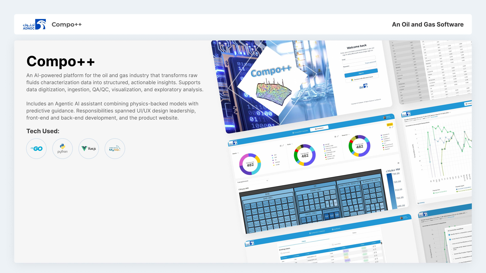

Compo++
Fluids characterization data, digitized and made arguable.
What it is
An AI-powered platform for the oil and gas industry that turns raw fluids characterization data into structured, actionable insight. It handles digitization, ingestion, QA/QC, visualization and exploratory analysis, with an agentic assistant that pairs physics-backed models with predictive guidance.

The problem
Fluids characterization data arrives as lab PDFs, vendor exports and legacy files in formats nobody standardized. Engineers were spending more time getting data into a usable shape than analyzing it, on decisions where the delay costs real money per day.
What we shipped
- Digitization and ingestion for lab reports and vendor data formats
- Automated QA/QC that flags physically implausible values before analysis
- Visualization and exploratory analysis built for fluids engineers
- An agentic AI assistant combining physics-backed models with prediction
Where it stands today
- Built for ADNOC alongside the FluidsData product line
- QA/QC runs on ingestion instead of being someone's manual review step
- Engineers ask the assistant questions instead of building the chart first
- Go and Python back end sized for large technical datasets
Hover a layer
Four layers between a lab PDF and a decision.
Ingest
Lab reports, vendor exports and legacy files land in one pipe and come out as typed records.
QA/QC
Physically implausible values get flagged at ingestion, not discovered three charts later.
Analyze
Exploratory tooling built around how fluids engineers actually interrogate a dataset.
Assist
An agentic assistant that answers in domain terms and shows the data behind the answer.
One conversation makes your roadmap real.
Tell us what you're building. You'll get an honest read on scope, timeline and the right engagement model, usually within two business days.